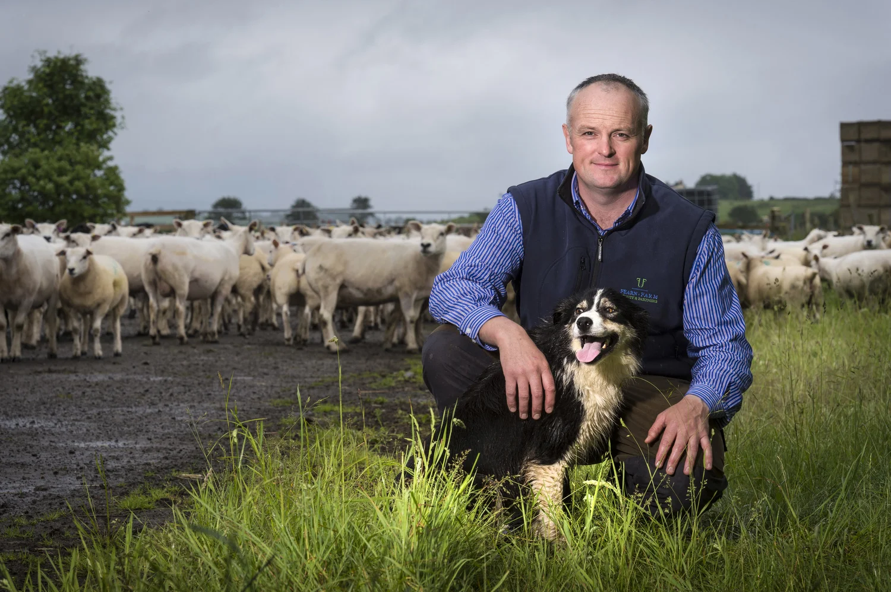
“
We’ve spent years showing that good farming creates value well beyond the carcass. The Living Certificate is the first thing that actually measures it.
Eric Heath
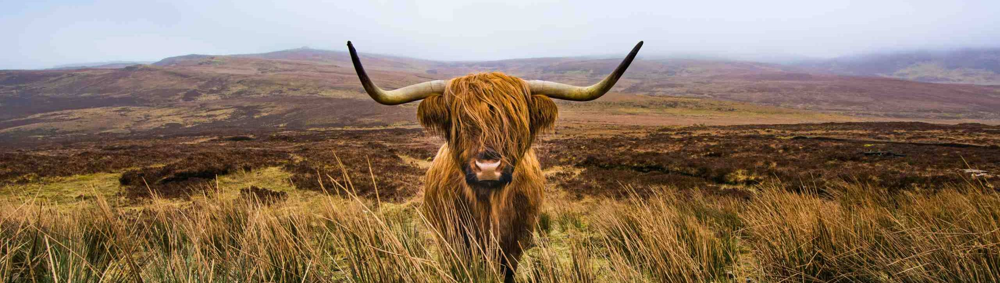
The new standard for British regenerative meat, defined by those doing the work.
The farmers doing the most for their land and livestock are rarely the ones rewarded for it.
Charter is setting a new standard for regenerative meat farming, assessing both how a farm operates and what it produces.
For the first time, they are rewarded not only for the food they produce, but for improving soil health, supporting wildlife and increasing nutrient density.
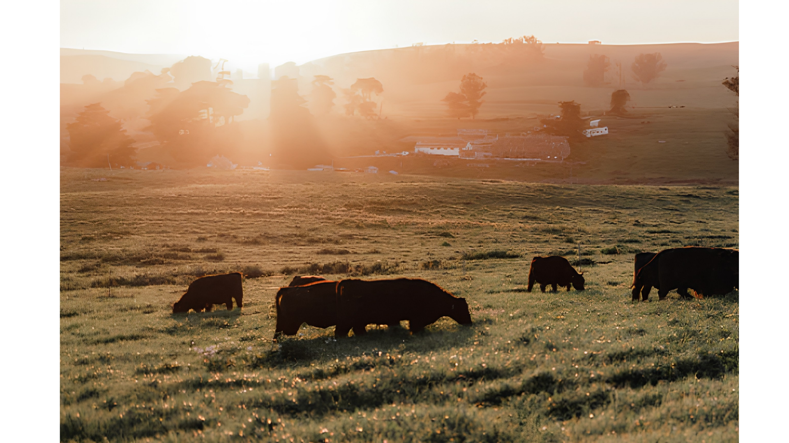
Shaped from the ground up by the people doing the work, the Charter sets out the principles that define regenerative meat farming. As new farms join, they commit to those shared standards and help strengthen them over time. Explore each farm to hear their story.

We’ve spent years showing that good farming creates value well beyond the carcass. The Living Certificate is the first thing that actually measures it.
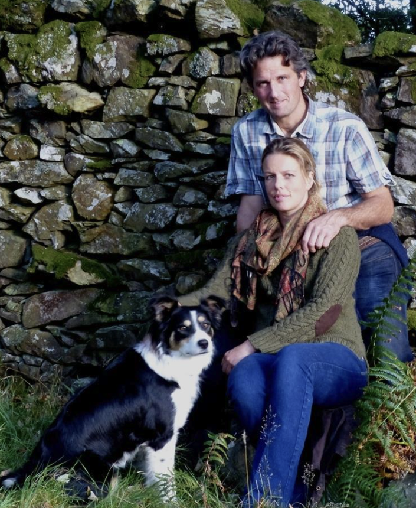
Look after the soil and the wildlife, and the farm looks after itself. The trick is being able to prove it.
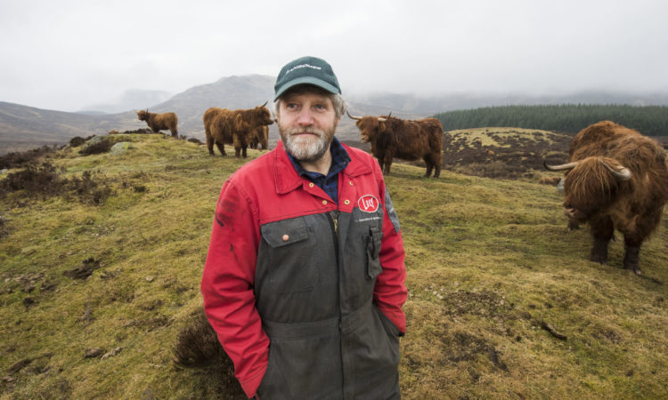
Britain produces some of the highest quality beef in the world but doesn’t fairly reward farmers. Charter is finally changing that, that ought to count for something.
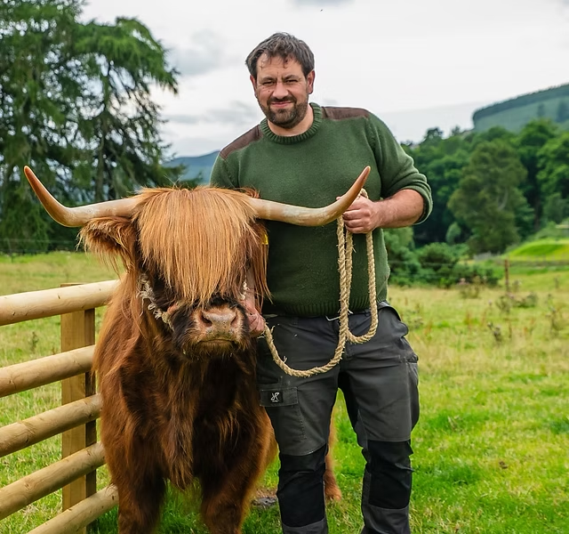
People want to know where their food comes from. We can go one further, and show them what it’s doing for the land.
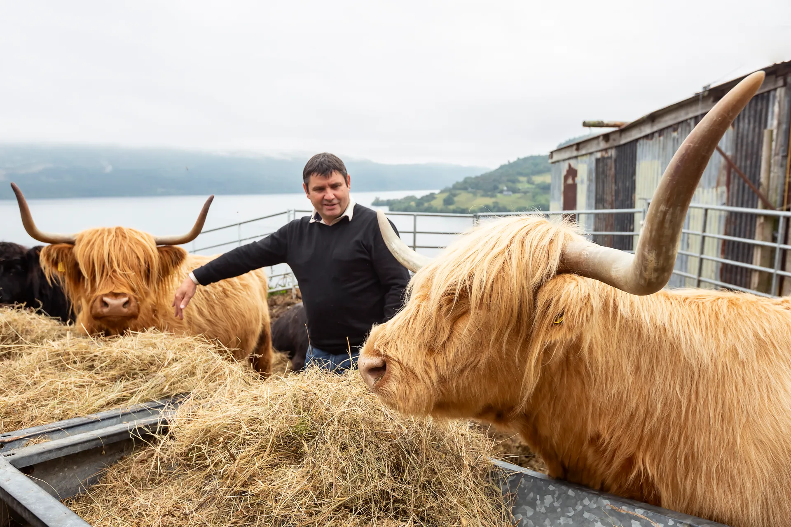
Regenerative farming is judged in the field, not the boardroom. If the land’s improving, the record should show it.
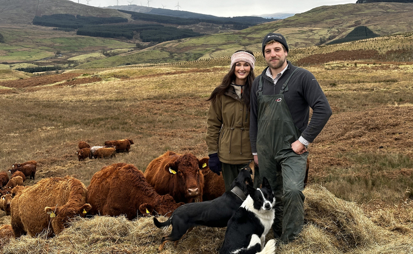
No two farms are the same. That’s exactly why the record has to tell the truth about each one.
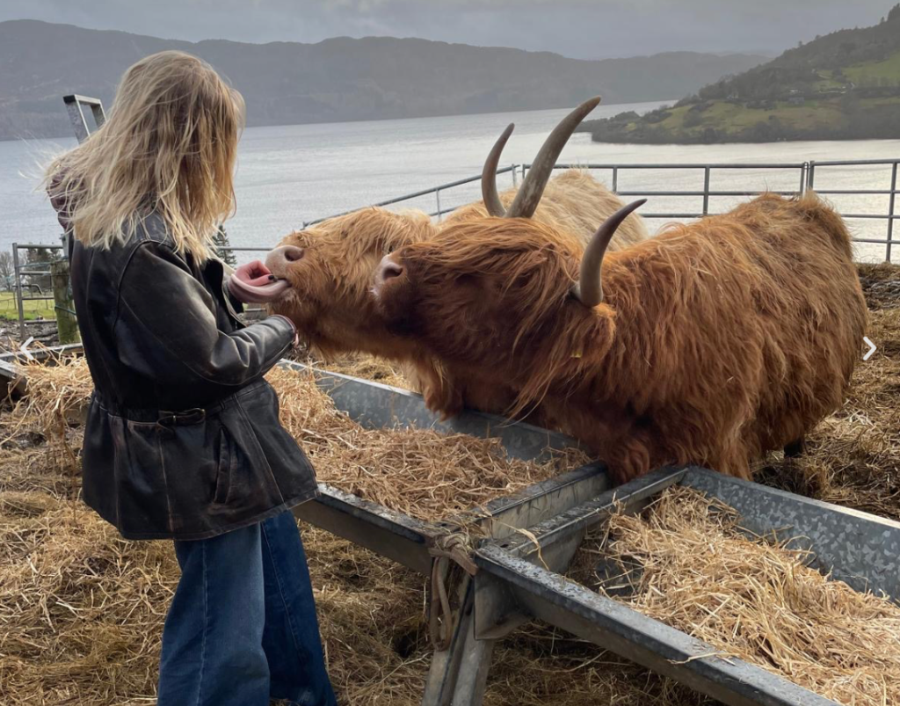
If you want proper evidence, you need proper controls. Doing it the same way every time gives the data a backbone.
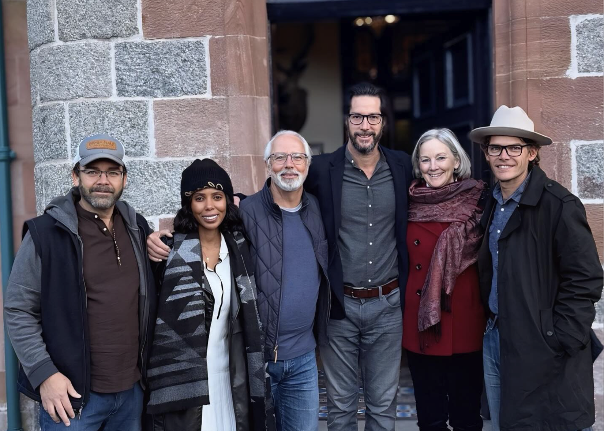
The evidence should travel with the food. Make a claim, and let people see what sits behind it.
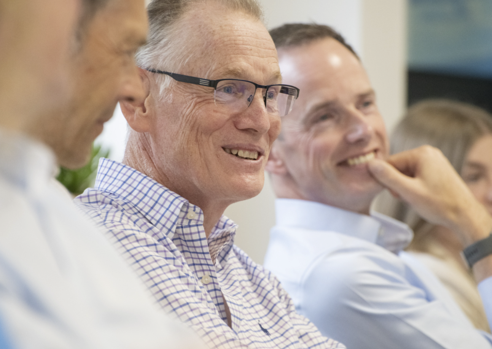
Collect the data properly, share it clearly — practical enough for farmers, credible enough for the market.
The traditional beef trade is built around a small number of premium cuts, while much of the animal is overlooked.
This wastes valuable farming resources and leaves significant nutritional value unrealised. Charter takes a whole animal approach, creating value from every part of the animal.
From tallow and marrow to fat and offal, we make full use of its nutritional richness rather than letting it go to waste.
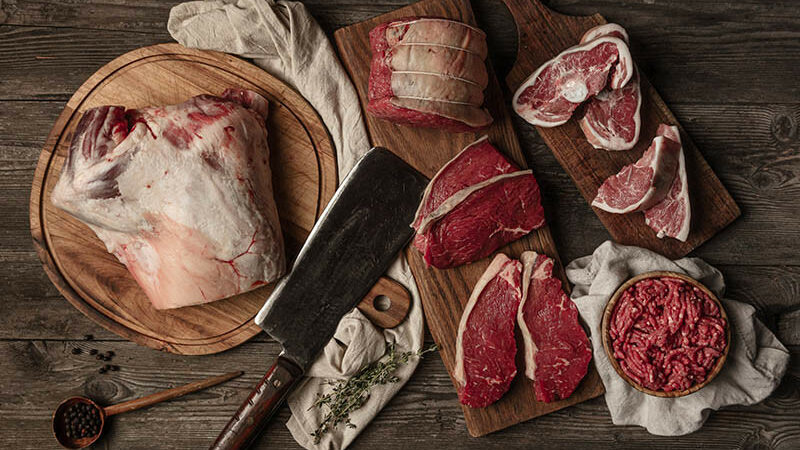
When the whole animal is valued, farmers are rewarded more fairly, more nourishing food reaches consumers, and the food system becomes stronger and more resilient for everyone it supports.
These are the first products to carry the Charter. Rich in flavour, naturally nutrient dense and made from parts of the animal too often overlooked,
they demonstrate what becomes possible when farmers are rewarded for outcomes rather than outputs.
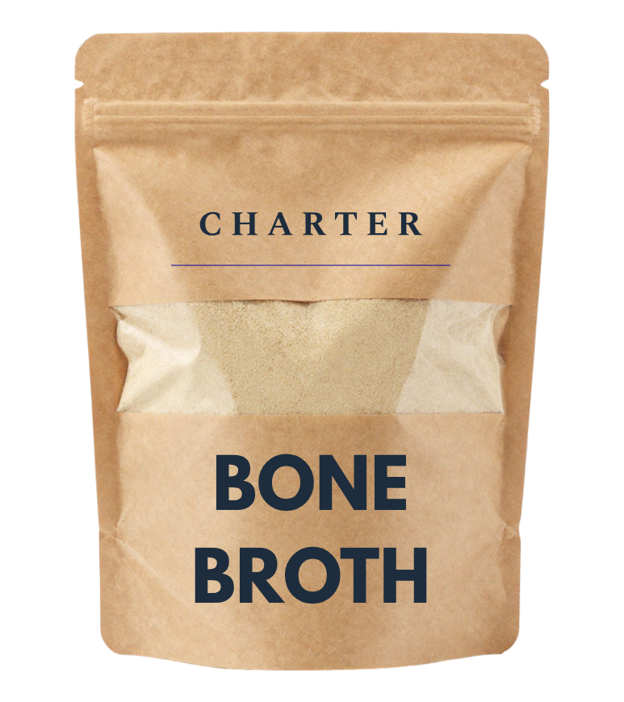
Made from beef bones simmered slowly over many hours, creating a rich stock with depth of flavour and natural collagen. Simple, nourishing food, made properly.
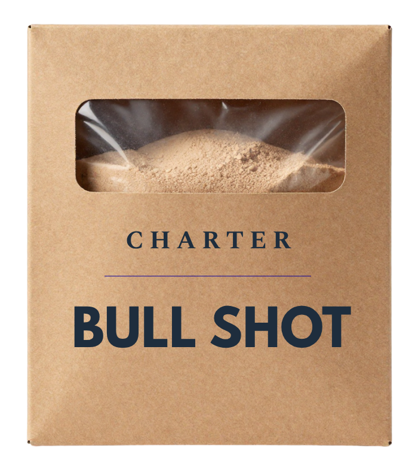
A savoury beef drink made from slow-cooked stock. Warming, restorative and surprisingly satisfying, whether enjoyed on its own or as part of a meal.
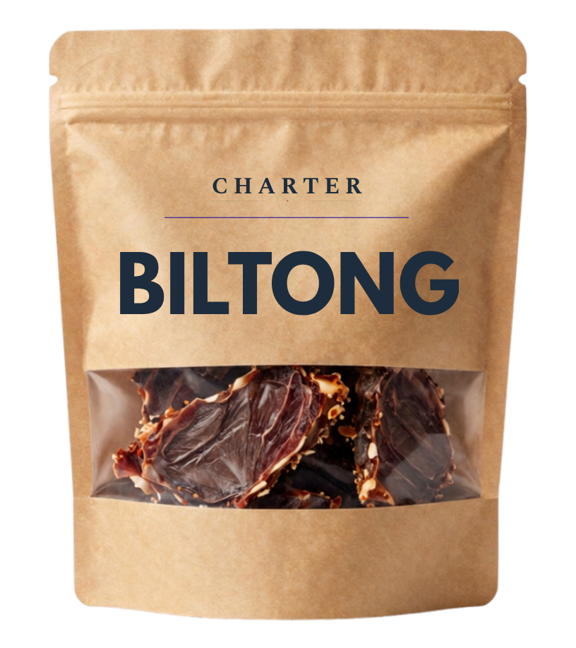
Air-dried beef with a firm bite and deep, savoury flavour. Made from carefully selected cuts and prepared slowly, allowing the quality of the meat to speak for itself.
Through a Living Certificate awarded on measurable outcomes, Charter ensures participating farmers are fairly recognised for regenerative practices.
Every Charter product carries a living record of what happened on the farm, creating a transparent way to track improvements in soil health and nutrient density over time.
By scanning the Living Certificate, you can connect directly to the farm and see the impact behind the food you buy.
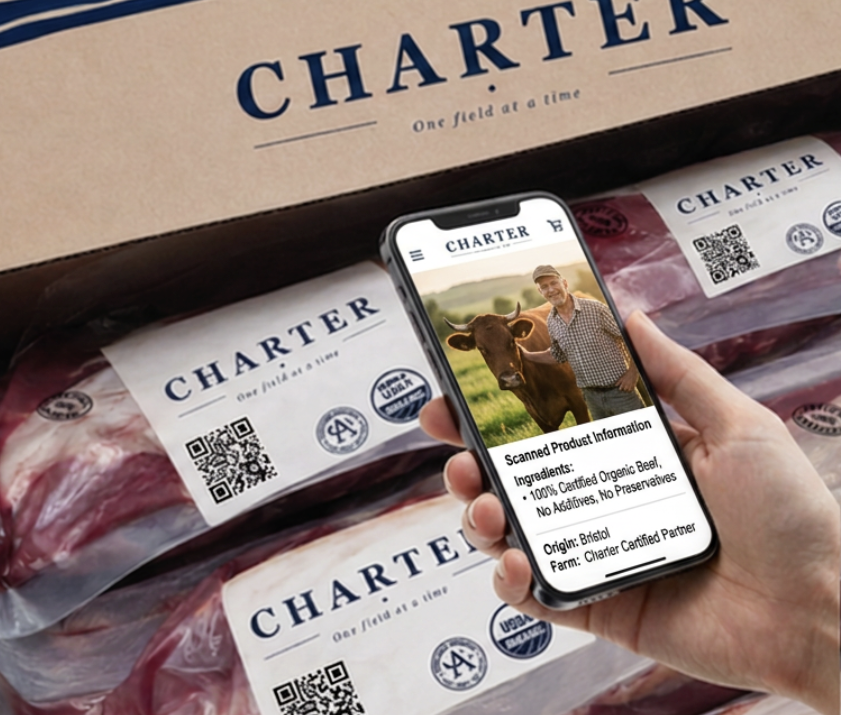
Sign up for updates from Charter.
Notes from the farms, news from the land, new products, and opportunities to support better farming across Britain.